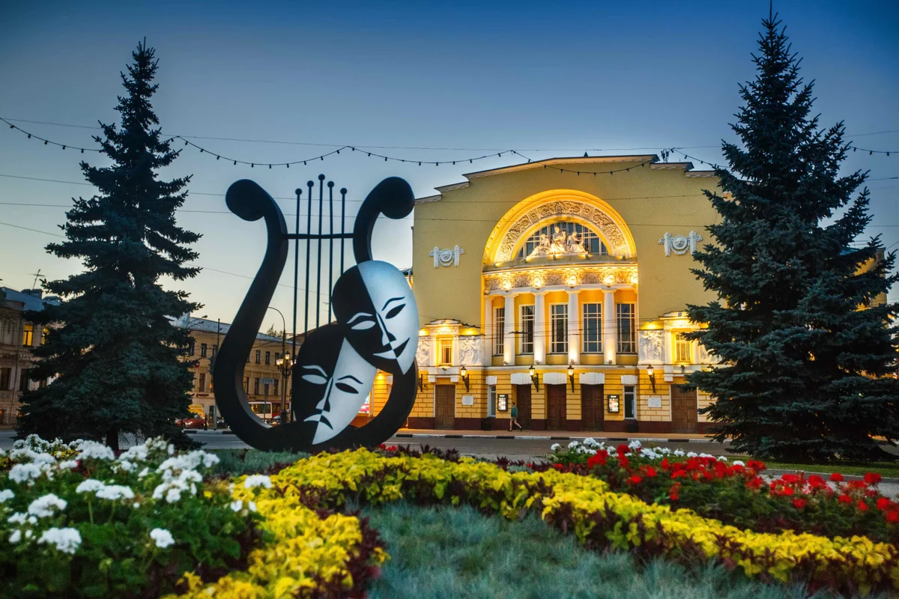
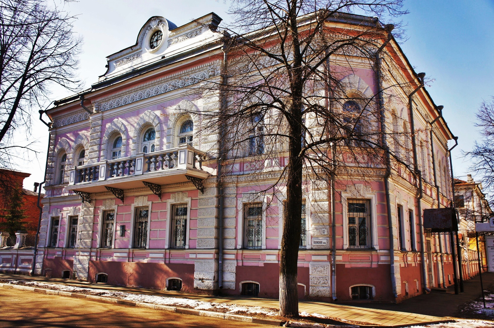
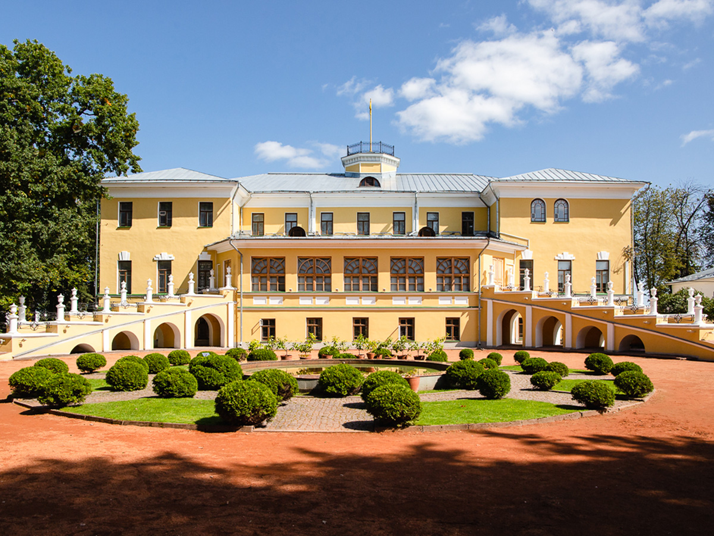

Ярославль
Ярославль — первый русский город на Волге, который упоминается в летописях. Повесть временных лет свидетельствует о существовании Ярославля уже в 1071 году. Начало Ярославлю дало финно-угорское поселение Медвежий Угол. Рядом с ним стояла небольшая крепость, вокруг которой и начали строить город. Исторический центр Ярославля — это 140 архитектурных памятников, которые охраняются государством. Предлагаем вам прогуляться по его историческим улицам, архитектурным памятникам и музеям.

В 1750 году в каменном амбаре Федор Волков с друзьями и братьями поставил свой первый спектакль, и Ярославль стал родиной русского публичного театра. Через полгода на берегу Волги открылось специальное здание — «театральная хоромина». Для представлений начали изготавливать костюмы и декорации, вскоре сложился постоянный репертуар. Императрица Елизавета Петровна специальным указом вызвала Федора Волкова в Санкт-Петербург для организации театра в столице.

В усадьбе купца Кузнецова, построенной в конце XIX века, расположен музей истории города. Здесь работают две основные экспозиции: «Десять веков в истории Ярославля» и «Из истории ярославской медицины». В коллекции хранятся старинные иконы, оружие XIII–XVIII веков, монеты, предметы утвари, фотографии, макеты городских храмов. История медицины и аптечного дела представлена фрагментом интерьера избы знахаря, кабинетами врачей XIX–XX веков.

Крупнейший региональный музей искусств основан в 1919 году по инициативе местных художников и любителей старины. В коллекции музея — уникальное собрание икон (среди них — «Спас Вседержитель» XIII века), собрание полупримитивистского «мещанского портрета» XVIII–XIX веков, произведения русских авангардистов. В экспозиции есть полотна Василия Перова, Карла Брюллова, Ивана Крамского, Ильи Репина, Ивана Айвазовского. Дополняют коллекцию керамика, гобелены, монеты и скульптуры — всего более 70 тысяч экспонатов.
